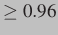

Next: Data scan functions Up: API Previous: Limits Contents
cl_stat..() family
of functions.
int cl_statinidir(const char *dirname, struct cl_stat *dbstat); int cl_statchkdir(const struct cl_stat *dbstat); int cl_statfree(struct cl_stat *dbstat);Initialization:
... struct cl_stat dbstat; memset(&dbstat, 0, sizeof(struct cl_stat)); cl_statinidir(dbdir, &dbstat);To check for a change you just need to call
cl_statchkdir and check
its return value (0 - no change, 1 - some change occured). Remember to reset
the cl_stat structure after reloading the database.
if(cl_statchkdir(&dbstat) == 1) {
reload_database...;
cl_statfree(&dbstat);
cl_statinidir(cl_retdbdir(), &dbstat);
}
Libclamav  includes and additional call to check the number of
signatures that can be loaded from a given directory:
int cl_countsigs(const char *path, unsigned int countoptions, unsigned int *sigs);The first argument points to the database directory, the second one specifies what signatures should be counted:
CL_COUNTSIGS_OFFICIAL (official signatures),
CL_COUNTSIGS_UNOFFICIAL (third party signatures),
CL_COUNTSIGS_ALL (all signatures). The last argument points
to the counter to which the number of detected signatures will
be added (therefore the counter should be initially set to 0).
The call returns CL_SUCCESS or an error code.